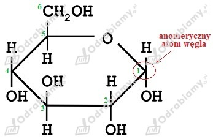
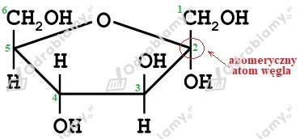
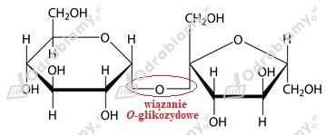
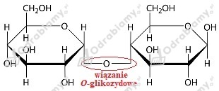

Zaczynamy od obliczenia liczby moli fruktozy w roztworze:
Masa molowa fruktozy o wzorze sumarycznym C6H12O6 wynosi 180 g/mol.
Liczymy masę 0,12 mola fruktozy:
Odpowiedź: W roztworze znajduje się 21,6 g fruktozy.
Glukoza:

Fruktoza:

Wzór sumaryczny sacharozy to C12H22O11.
Masa atomowa węgla to 12 u, wodoru 1 u, zaś tlenu 16 u. Liczymy stosunek masowy:
Masa cząsteczkowa sacharozy to 342 u. Liczymy skład procentowy:
Odpowiedź: Stosunek masowy pierwiastków w sacharozie to mC:mH:mO = 76:11:88, zaś skład procentowy to 42,1% węgla, 6,4% wodoru oraz 51,5% tlenu.
Sacharoza:

Maltoza:

Właściwości redukujące posiada maltoza, ponieważ atom węgla C1 jednego z jej pierścieni może tworzyć grupę aldehydową.
Masa cząsteczkowa pojedynczej reszty glukozy (C6H10O5) wynosi 162 u. Liczymy ilość reszt glukozy w cząsteczce celulozy:
Odpowiedź: Cząsteczka celulozy składa się z 7500 reszt glukozowych.
Uwaga: W odpowiedzi w podręczniku jest błąd. Podany tam wynik zakłada przyjęcie w obliczeniach masy całej cząsteczki glukozy C6H12O6 czyli 180 u, jednak jest to założenie błędne w kontekście podanej treści zadania.
Sacharoza nie posiada właściwości redukujących, dlatego w pierwszej probówce nie dojdzie do zmiany stopnia utlenienia miedzi z II na I i nie wytrąci się ceglasty osad. Dodanie do roztworu kwasu solnego spowoduje rozłożenie sacharozy na glukozę i fruktozę, które posiadają właściwości redukujące i dzięki temu możliwe jest powstanie osadu tlenku miedzi(I).
Masę molową skrobi możemy zapisać jako n . 162 g/mol. Masa molowa glukozy to 180 g/mol. Z równania reakcji widzimy , że z jednego mola skrobi otrzymujemy n moli glukozy. Liczymy masę otrzymanej glukozy:
Odpowiedź: Otrzymano 1111 g glukozy.
Próbkę śmietany należy zakroplić jodyną. Jeżeli pojawi się charakterystyczne granatowe zabarwienie, będzie to świadczyć o obecności skrobi w śmietanie, a zatem o tym, że została ona zagęszczona mąką. Brak granatowego zabarwienia będzie świadczyć o nieużyciu mąki.
Obserwacje: W obu probówkach następuje roztworzenie osadu wodorotlenku miedzi(II) i powstaje klarowny szafirowy roztwór. W probówce umieszczonej w łaźni wodnej, w wyniku ogrzewania zanika szafirowa barwa roztworu i wytrąca się ceglasty osad.
Wniosek: Glukoza jest związkiem polihydroksylowym o czym świadczy pojawienie się szafirowej barwy roztworu. Działanie wysokiej temperatury "aktywuje" właściwości redukujące tego cukru, co prowadzi do redukcji miedzi z II na I stopień utlenienia i do wytrącenia osadu tlenku miedzi(I) Cu2O.
Obliczanie masy laktozy w serku:
Odpowiedź: Opakowanie serka o masie 250 g zawiera 7,25 g laktozy.